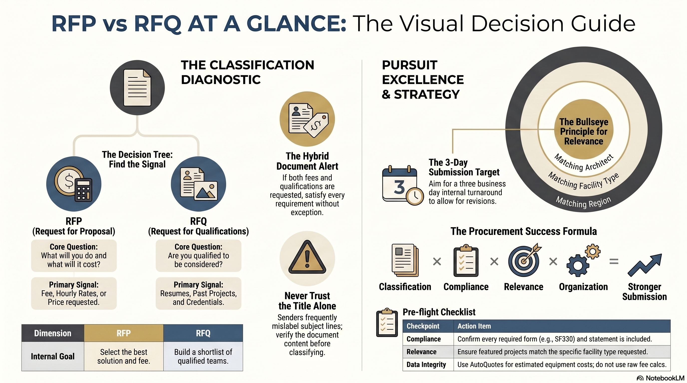
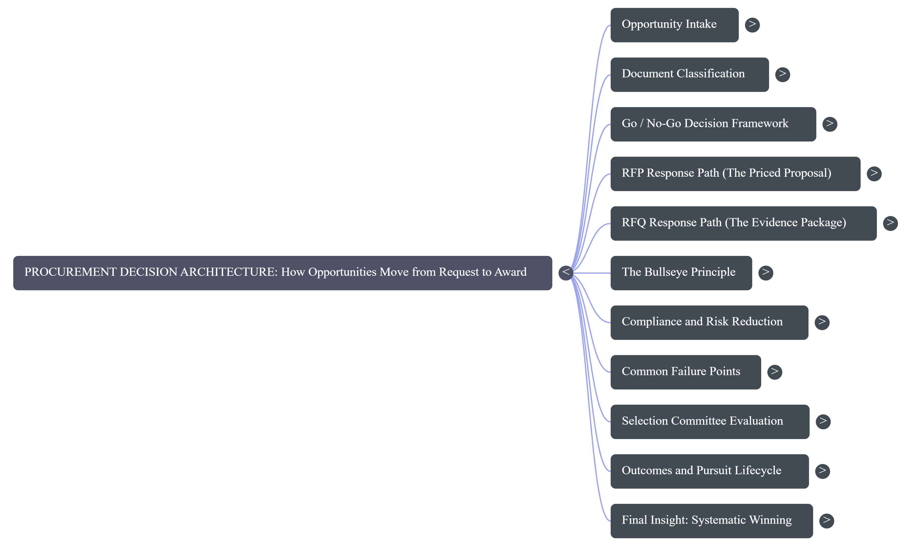

Create The Edge Sales & Proposal Development Training Guide · 2026 Edition
F
RFP vs. RFQ
The two documents that start almost every pursuit. Read them correctly and you advance. Misread them and you are disqualified before anyone reviews your expertise.
Create The Edge Associates, Inc. · [Company Address] · Internal Use Only · 2026
MODULE F · BRIEFINGS
Watch and Listen
Section Briefings
Watch the video, listen to the podcast, then read the module. The same procurement discipline in three formats.
Video · The Gauntlet: Surviving the Procurement Elimination Funnel
Why qualified firms lose: the hidden reasons firms get eliminated before their expertise is reviewed.
Audio · Why Public Procurement Is a Reading Test
The procurement discipline that keeps Create The Edge in the running and out of the elimination funnel, narrated.
Module F · RFP vs. RFQ Decision Guide

Module F · Concept Mind Map

MODULE F · THE DOCUMENTS
F.1 · What Is an RFP
What Is an RFP
An RFP is a request for a proposal. The client is asking a direct question: what will you do, how will you do it, and what will it cost. If the document asks for a fee, you are holding an RFP.
RFP stands for Request for Proposal. It is a formal invitation from a client, an architect, or a public agency asking Create The Edge to describe the work we would perform and to state the fee we would charge to perform it. An RFP is fundamentally a buying document. The party issuing it has already decided that the project is moving forward and now wants to compare competing approaches and prices before selecting a consultant.
The defining feature of an RFP is the request for a fee. When a document asks how much the work will cost, asks for a fee schedule, asks for hourly rates, or asks you to price a defined scope, it is an RFP. Confusing the two document types is one of the fastest ways to look untrained in front of a client, so the test for which document you are holding should become automatic.
▦ Rule of the House
If the document asks for a fee, a price, hourly rates, or a cost for a defined scope of work, it is an RFP. If it asks only for who you are and what you have done before, it is an RFQ. The fee is the dividing line.
Figure F.1.1 · What an RFP Contains
RFP Element
What It Tells You
Why It Matters to Create The Edge
Project description
The facility type, location, and purpose
Sets the sector rate and the bullseye for relevant past work
Scope of work
The deliverables the client expects, by phase
Drives which of the five core phases appear in the fee
Due date and time
The submission deadline and delivery method
Anchors the three business day internal turnaround target
Submittal requirements
Format, forms, and required statements
Missing a requirement is an automatic disqualification
Drawings or program
Square footage, capacity, or a space program
Lets you size the kitchen and build the equipment budget
Fee request
The explicit ask for a price
This is the signal that confirms the document is an RFP
☰ From the Files
An architect emailed a project labeled in the subject line as a request for proposal for a correctional facility. The body said: find attached the request for proposal, proposals will be received until the twenty-fifth at four o'clock. The attachment defined the project, gave preliminary drawings, and asked for a fee. Every signal pointed to an RFP, so the response was a priced fee proposal delivered well ahead of the deadline, not a qualifications package.
⚠ Watch Out
The label on the email is not proof of the document type. Senders routinely write request for proposal when they mean request for qualifications, and the reverse. Read the body and the attachment, find out whether a fee is being requested, and classify the document yourself. Never trust the subject line alone.
MODULE F · THE DOCUMENTS
F.2 · What Is an RFQ
What Is an RFQ
An RFQ is a request for qualifications. The client is not yet asking what you will charge. They are asking a simpler question: are you qualified to be considered at all.
RFQ stands for Request for Qualifications. Instead of asking for a price, the issuer asks Create The Edge to prove that the firm has the experience, the credentials, and the relevant past projects to be trusted with the work. An RFQ is a screening document. The client is building a shortlist, and the question on the table is whether the firm belongs on it.
This is why an RFQ asks for resumes of key personnel, descriptions of comparable past projects, professional credentials, and firm history. It rarely asks for a fee, because pricing happens later, after the field has been narrowed to qualified firms.
▦ Rule of the House
An RFQ asks who you are and what you have done. It wants resumes, relevant project descriptions, and credentials, and it usually does not request a fee. Respond by proving qualification, not by pricing scope.
Figure F.2.1 · The Bullseye: Selecting Relevant Past Work
CENTER: Same architect + same facility type + same city + same state
Same facility type, same city, different architect
Same facility type, same state
Same facility type, anywhere in the country
❞ The Advocate Principle
"An RFQ is a reading test before it is anything else. If we can read what they asked for and answer exactly that, we pass to the next level. We do not win the job yet, but we are qualified. If we cannot read it, or we will not take the time to fill it out correctly, we are immediately disqualified."
· Blair Enns, Win Without Pitching Manifesto
✓ Best Practice
When an RFQ targets a K-12 school, pull past K-12 school projects first. When it targets a healthcare campus, pull healthcare projects. Matching the facility type is what proves Create The Edge has expertise in the exact area the client is screening for. Generic project lists do not persuade.
MODULE F · THE DOCUMENTS
F.3 · Critical Differences
Critical Differences Between RFP and RFQ
Same three letters rearranged, completely different jobs. One asks for a price. The other asks for proof. Knowing which is which decides what you build and how you win.
Figure F.3.1 · RFP vs. RFQ at a Glance
Dimension
RFP (Request for Proposal)
RFQ (Request for Qualifications)
Core question
What will you do and what will it cost
Are you qualified to be considered
Fee requested
Yes, a price is required
No, pricing comes later
Primary content
Scope, methodology, phases, fee
Resumes, past projects, credentials
What you submit
A priced fee proposal
A qualifications package
Decides what
Who is selected to do the work
Who advances to the shortlist
Common forms
Firm proposal template
SF330, SF254, agency forms
Internal routing
Fee calculations, then review, then draft
Research past work, then assemble, then review
✓ Best Practice: 30-Second Classification
Open the document, scan for the word fee, price, rate, or cost, then scan for the words qualifications, resume, or experience. Decide RFP, RFQ, or hybrid before you do anything else. The classification determines your entire workflow, so it comes first.
⚠ Watch Out: The Hybrid Document
Some documents are genuinely both. When a document mixes both, treat it as a hybrid: satisfy every requirement it lists, the qualifications and the pricing. Do not assume a single category and drop a requirement, because dropping any requirement risks disqualification.
MODULE F · THE DOCUMENTS
F.4 · How to Read an RFP
How to Read an RFP
Reading an RFP is not skimming. It is a structured hunt for the handful of facts that decide your fee, your scope, and your deadline. Miss one and the whole response is built on sand.
Figure F.4.1 · The Four-Pass Method
Pass one, classify. Confirm it is an RFP by finding the fee request. If it also asks for qualifications, flag it as a hybrid.
Pass two, capture the hard facts. Mark the project name, the location, the facility type, the due date and time, and the delivery method. These become the reference line and the deadline.
Pass three, extract the scope and the numbers. Find the square footage, the capacity, any space program, and the phases the client expects. These feed the fee calculation.
Pass four, list every submittal requirement. Write down each required form, statement, format rule, and page limit. Treat this as a checklist you must satisfy completely.
▦ Rule of the House
Read content, not labels. Respond to what the document actually asks for, line by line, not to what you assume a project of this type usually wants. Then confirm anything ambiguous with the architect before you build the response.
☰ From the Files
A correctional facility RFP gave preliminary drawings totaling roughly four thousand square feet and stated a population of four hundred twenty-eight inmates, with a note about expanding to four hundred ninety. Using ten square feet per inmate for a population under five hundred, the kitchen should have been about four thousand nine hundred square feet. The response designed to the larger number, then added a note: based on the drawings received Create The Edge will design to the stated area, but based on correctional industry data the kitchen may be undersized. That note both protected the firm and flagged a likely future add service.
✓ Best Practice
Acknowledge receipt fast. If the RFP asks for confirmation by a certain date, respond the same day to say Create The Edge received it and is reviewing. A quick, professional acknowledgment opens the relationship and signals that the firm is on it.
MODULE F · THE DOCUMENTS
F.5 · How to Read an RFQ
How to Read an RFQ
An RFQ rewards precision. Answer exactly what is asked, in the order it is asked, with the most relevant proof you have. Nothing more, nothing missing.
Reading an RFQ follows the same disciplined spirit as reading an RFP, but the hunt is for different things. You are not pricing scope; you are identifying what the client wants you to prove and gathering the strongest evidence to prove it.
Figure F.5.1 · What to Extract from an RFQ
The facility type being screened. This sets the bullseye for which past projects to feature.
The required forms. Government RFQs frequently require an SF330 and sometimes an SF254 or SF330 Part Two. Note exactly which are requested.
The number of past projects required. Many forms ask for a specific number of comparable projects, often around five. Provide the number requested.
The personnel requested. Identify whose resumes are required and in what format.
The submission method and deadline. Confirm where and how the package is delivered and by when.
❞ Expert Insight
"It is just like the RFQ, thinking of the bullseye. If they are going after a K-12 school, you look for K-12 schools. You want to address exactly what they are asking for, because they are trying to show the customer that they have experience and that Create The Edge can show expertise in that particular area."
· Philip Kotler, Marketing Management
⚠ Watch Out: One Team Is Not Exclusive
An architect may ask whether Create The Edge will commit to their team alone. The firm cannot promise exclusivity, because multiple architects pursuing the same public project may each place the firm on their team, sometimes without the firm even knowing. Be honest that the firm works on multiple teams. This is normal in public procurement.
✓ Best Practice
When you want to sharpen the response, offer the architect a brief call. A short conversation to confirm what they are looking for shows service, builds the relationship, and lets you customize the qualifications to their criteria.
MODULE F · THE DOCUMENTS
F.6 · The SF330 Form
The SF330 Form
The SF330 looks intimidating and is not. It is a standard government qualifications form, and most of what it wants you already have in past proposals. Find the material, paste it in, done.
The SF330 is Standard Form 330, the federal government form used to collect architect and engineering qualifications for public projects. When a public agency or an architect pursuing public work asks Create The Edge to qualify, they will often request an SF330, and sometimes a companion form such as the SF330 Part Two or the older SF254.
Figure F.6.1 · SF330 Fields and Sources
SF330 Field
What to Enter
Where the Content Comes From
Project title and location
The anonymized project name and city, state
Past proposal reference line
Year completed / in progress
Start year and current status
Project records
Brief description
Scope, size, cost, and specific role
First one to two paragraphs of the past proposal
Estimated cost
Estimated cost of foodservice equipment
AutoQuotes equipment estimate for that project
Key personnel resumes
Roles and relevant project history
Existing personnel records
▦ Rule of the House
For the cost field, enter the estimated cost of foodservice equipment, not the total cost of the entire facility. The marketing team rarely knows the final all-in project cost, and AutoQuotes gives a reliable equipment estimate. Labeling the figure as estimated equipment cost is accurate and defensible.
❞ Expert Insight
"The first couple of paragraphs that I tell you to put into your proposal, identifying why we are doing the project and what the customer wants, that is literally this module right here on the SF330. It becomes a copy and paste, and you are done."
· Blair Enns, Win Without Pitching Manifesto
⚠ Watch Out
Older proposals are sometimes sparse and missing details like square footage. When you reuse them for an SF330, fill the gaps with current data rather than copying the gap forward. Square footage matters and should be in the description when you have it.
MODULE F · THE DOCUMENTS
F.7 · Go / No-Go Decision Framework
The Go / No-Go Decision Framework
Not every request deserves a response. A disciplined go or no-go decision protects the team's hours for the pursuits where Create The Edge can genuinely compete and win.
Figure F.7.1 · Go / No-Go Gates
1
Gate One
Can we meet the deadline?
Within the three business day internal turnaround target. If the deadline is unreachable, escalate before declining.
2
Gate Two
Do we have bullseye past work?
Relevant past work matching the facility type being screened. Generic project lists do not persuade; bullseye work does.
3
Gate Three
Is the scope within our expertise?
Within Create The Edge's foodservice and laundry design expertise. If unclear, verify with [Company Owner] before investing time.
4
Gate Four
Can we satisfy every requirement?
Every required form, statement, and format rule. A strong submission missing one requirement is an automatic disqualification.
▦ Rule of the House: Three-Day Target
The internal turnaround target is three business days or less. Aim to deliver well before the client's actual deadline so there is room for a revision. Never submit on the exact date the client needs it, because if they require a change you have left them no time.
✓ Best Practice: A No-Go Is a Leadership Decision
A no-go is a decision to be made with leadership, not alone. Relationships matter, and an architect who calls Create The Edge for help on a thin project is building a connection worth honoring. When a pursuit looks marginal, flag it to [Company Owner] or [Department Manager] with your reasoning rather than declining quietly.
MODULE F · RESPONSES
F.8 · Structuring the RFP Response
Structuring the RFP Response
An RFP response is a priced proposal, and it travels a defined path: classify, calculate, review, draft, review again, submit. The path exists so that no fee leaves the building unchecked.
Figure F.8.1 · The RFP Response Workflow
1
Classify and Acknowledge
Confirm it is an RFP and acknowledge receipt to the client the same day.
2
Build the Fee Calculation
Use the fee and scope template to size the kitchen, set the sector rate, and produce the equipment budget and fee.
3
Route Fee for Review
Send the fee calculation to [Department Manager], or to [Company Owner] when [Department Manager] is unavailable. Nothing drafts until the fee is approved.
4
Draft the Proposal
Transfer the approved numbers into the proposal: cover letter, scope by phase, square footage section, consultation agreement.
5
Route Proposal for Review
Send the draft back to [Department Manager] or [Company Owner]. Revisions go into the revision column, get corrected, and return for another review.
6
Submit Ahead of Deadline
When it is marked good to go, deliver it ahead of the client's deadline, leaving room for any last-minute adjustment.
▦ Rule of the House
The fee calculation is your basis, not your proposal. You take the information from the fee calculation and put it into the proposal. Never paste a raw calculation worksheet into a client document, and never draft a fee proposal before the calculation has been reviewed.
⚠ Watch Out
There can be healthy tension between speed and completeness. [Company Owner] may push to get the proposal out quickly, and that instinct is valid. Balance that against the requirements the RFP actually lists. Fast is good, but a fast submission that drops a required statement or form is still disqualified.
MODULE F · RESPONSES
F.9 · Structuring the RFQ Response
Structuring the RFQ Response
An RFQ response is an evidence package. Assemble the right past work, complete every required form, and answer exactly what was asked, in the order it was asked.
Figure F.9.1 · The RFQ Response Workflow
1
Classify and Acknowledge
Confirm it is an RFQ and acknowledge receipt to the client.
2
Identify Forms and Counts
Note whether an SF330, SF254, or SF330 Part Two is required and how many past projects are requested.
3
Select Bullseye Past Work
Choose projects matching the facility type, working outward from the center of the bullseye.
4
Assemble the Package
Pull project descriptions from past proposals, add estimated equipment costs from AutoQuotes, complete personnel resumes.
5
Route for Review
Send to [Department Manager] or [Company Owner], correct any revisions, and return for a final check.
6
Submit Ahead of Deadline
Deliver the qualifications package early, leaving room for any adjustment.
Figure F.9.2 · RFQ Package Components
Component
Source
Quality Standard
Project descriptions
Opening paragraphs of past proposals
Match the facility type being screened
Estimated equipment cost
AutoQuotes for each featured project
Labeled as estimated equipment cost
Square footage
Project records or measured drawings
Included whenever available
Key personnel resumes
Existing personnel records
Format requested by the form
Required government forms
SF330, SF254, Part Two as requested
Every requested field completed
❞ The Advocate Principle
"The more qualified information you can provide that meets their criteria, the more likely they are going to want us on their team. We make sure we read the request, understand the request, and provide them information that meets the requirements."
· Robert B. Miller & Stephen E. Heiman, Strategic Selling
MODULE F · RESPONSES
F.10 · Common Mistakes
Common Mistakes
Most lost pursuits are not lost on expertise. They are lost on a misread document, a missing form, or a deadline managed without margin. These mistakes are all avoidable.
⚠
Mistake 1
Trusting the Label
Treating a document as an RFP or RFQ based on the email subject line. Senders mislabel constantly. Always classify from the content by checking whether a fee is requested.
⚠
Mistake 2
Missing a Submittal Requirement
Skipping a required form, statement, or format rule. Any missing requirement is grounds for immediate disqualification, no matter how strong the rest of the submission is.
⚠
Mistake 3
Generic Past Work in an RFQ
Featuring a generic list of projects instead of bullseye-relevant work. If the screen is for a school, lead with schools, not with whatever is most recent.
⚠
Mistake 4
Submitting on the Deadline
Delivering at the exact date and time the client set. If they need a revision, there is no room left. Aim to submit well ahead so there is margin.
⚠
Mistake 5
Pasting Raw Numbers
Dropping a fee calculation worksheet directly into a client proposal. The calculation is the internal basis. The proposal translates it into client-facing language.
⚠
Mistake 6
Carrying Forward Old Gaps
Reusing a sparse old proposal for an SF330 and copying its missing data forward. Fill gaps such as square footage with current information instead.
✓ Best Practice: Run the Pre-Flight Checklist
Before anything goes to review: classification confirmed, every submittal requirement listed and satisfied, bullseye work selected, numbers reviewed, deadline set with margin. The checklist turns these six mistakes into six questions you answer before they can hurt you.
MODULE F · RESPONSES
F.11 · File Naming & Submission Standards
File Naming and Submission Standards
A consistent file name is not bureaucracy. It is how the team matches a document to a project months later, when memory has faded and the pipeline has moved on.
Naming discipline matters because the firm carries many pursuits at once, sometimes several proposals for the same project, and the procurement cycle can run for years. A consistent naming standard lets anyone match a document to its project and its pending number long after the original author has moved on.
Figure F.11.1 · The Naming Convention
Use the pending project number. Each pursuit gets a pending number. That number becomes part of the folder and the document name so the proposal can always be matched to the project.
Tag the document type. When the pursuit is an RFQ, append a dash-RFQ at the end of the folder name so the type is visible at a glance.
Include the number in the Word file and the project name. Put the proposal number inside the actual Word document name along with the project name, so multiple proposals for one project never get confused.
Match the PDF to the source. When you create the PDF, it should be a faithful copy of the Word document you just wrote, carrying the same number and name.
Figure F.11.2 · Key Metrics
3
Business day internal turnaround target
~5
Comparable past projects a typical SF330 requests
2-5
Years a public procurement cycle can run
1
Signal that classifies the document: the fee request
▦ Rule of the House
The pending number on the project becomes the number on the folder and on the Word file. Track that number and match it everywhere. When there are multiple proposals for the same project, the number plus the project name is what keeps them straight.
✓ Best Practice
Save the originating email and every attachment into the project folder at intake. When the email or scope is missing later, reconstructing what the client actually asked for is slow and error-prone. Capturing it once, at the start, protects the whole pursuit.
MODULE F · ASSESSMENT
✓ Comprehensive Test
The Procurement Documents: Assessment
15 questions progressing from Knowledge through Application to Judgment. Do not check answers until you have completed the entire test.
F.1
What does the abbreviation RFP stand for?
ARequest for Pricing
BRequest for Procurement
CRequired Foodservice Plan
DRequest for Proposal
F.2
What does an RFQ primarily ask a firm to provide?
AProof of qualifications and relevant past work
BA detailed fee schedule
CA construction timeline
DA signed consultation agreement
F.3
Which single signal most reliably tells you a document is an RFP rather than an RFQ?
AIt comes from an architect
BIt requests a fee or price
CIt arrives by email
DIt is several pages long
F.4
What is the SF330?
AA standard government form for architect and engineering qualifications
BA health department permit
CA federal foodservice equipment list
DA fee calculation worksheet
F.5
What is Create The Edge's internal turnaround target for getting a response out the door?
ATwo weeks
BThree business days or less
CSame day
DOn the client deadline
F.6
On an SF330, what figure should you enter for a project's cost?
AThe client's annual budget
BThe total all-in cost of the entire facility
CThe estimated cost of foodservice equipment
DThe architect's design fee
F.7
An RFQ targets a K-12 school. Applying the bullseye, which past project should you feature first?
AA past K-12 school project
BA healthcare campus project
CThe firm's most recent project of any type
DThe largest project by dollar value
F.8
An RFP's drawings show a kitchen that looks undersized for the stated inmate capacity. What is the right move?
ARefuse to submit the proposal
BDouble the fee without explanation
CDesign to the drawings and add a note flagging possible undersizing based on industry data
DIgnore it and design exactly to the drawings
F.9
In the RFP response workflow, what must happen before drafting the proposal begins?
AThe folder must be archived
BThe PDF must be created
CThe fee calculation must be reviewed and approved by [Department Manager] or [Company Owner]
DThe client must sign a contract
F.10
An architect asks Create The Edge to commit to their team exclusively for a public project. What is the correct response?
AIgnore the question
BAgree to exclusivity to win favor
CDecline the pursuit entirely
DExplain honestly that the firm works on multiple teams
F.11
Why does Create The Edge append a dash-RFQ tag and the pending number to a project folder name?
ATo make the folder appear first alphabetically
BTo satisfy a government regulation
CTo hide the project from competitors
DSo the document type and project can be identified and matched later
F.12
A document is labeled "request for proposal" but also asks for resumes and relevant past projects in addition to a fee. How should you treat it?
AAs a hybrid and satisfy every requirement, both qualifications and pricing
BAs a pure RFQ and skip the fee
CReturn it to the sender for clarification before reading
DAs a pure RFP and skip the resumes
F.13
Your team finishes a strong RFQ package but realizes it omitted one required government form. What is the consequence?
AThe submission is still competitive on expertise
BThe submission can be immediately disqualified
CThe client will request it later
DIt only matters for federal projects
F.14
Leadership pushes to submit a fee proposal immediately, but the RFP lists a required independence statement you have not added. What do you do?
ARemove the scope section to save time
BSubmit now, since speed wins projects
CSubmit without it and send it separately later
DAdd the required statement first, then submit as quickly as possible
F.15
A pursuit is marginal: thin scope, weak bullseye match, but the architect personally called to ask for help. What is the best action?
ASubmit a low-effort package
BPromise the architect exclusivity
CFlag it to [Company Owner] or [Department Manager] with your reasoning and let leadership decide
DQuietly decline to save hours
MODULE F · ASSESSMENT
☑ Answer Legend · Part 1 of 2
Answers · F.1 through F.8
Do not review until the test is complete.
F.1
Correct: D · Request for Proposal
RFP means Request for Proposal: the client is asking what you will do and what it will cost. See F.1.
F.2
Correct: A · Proof of qualifications and relevant past work
An RFQ asks the firm to prove it is qualified through resumes, past projects, and credentials. It usually does not request a fee. See F.2.
F.3
Correct: B · It requests a fee or price
The fee request is the dividing line. If the document asks for a price, rate, or cost, it is an RFP. See F.3.
F.4
Correct: A · A standard government form for architect and engineering qualifications
The SF330 is Standard Form 330, the federal qualifications form used to collect A&E experience for public projects. It is the government's version of an RFQ. See F.6.
F.5
Correct: B · Three business days or less
The internal target is three business days or less, delivered ahead of the client's actual deadline to leave room for revisions. See F.7.
F.6
Correct: C · The estimated cost of foodservice equipment
Enter the estimated cost of foodservice equipment, available from AutoQuotes. Marketing rarely knows the final facility cost, so the equipment estimate is the accurate, defensible figure. See F.6.
F.7
Correct: A · A past K-12 school project
The bullseye prioritizes matching facility type. For a school screen, lead with school projects to prove expertise in exactly what the client is screening for. See F.2.
F.8
Correct: C · Design to the drawings and add a note flagging possible undersizing
Design to the area given, then add a value-adding note: based on the drawings Create The Edge will design the stated area; based on industry data it may be undersized. This protects the firm and flags a possible future add service. See F.4.
MODULE F · ASSESSMENT
☑ Answer Legend · Part 2 of 2
Answers · F.9 through F.15
The remaining answers with reasoning and sub-module cross-references.
F.9
Correct: C · The fee calculation must be reviewed and approved by [Department Manager] or [Company Owner]
Nothing drafts until the fee calculation is approved. The calculation is the basis; review protects the firm before any number reaches the client. See F.8.
F.10
Correct: D · Explain honestly that the firm works on multiple teams
The firm cannot promise exclusivity, because multiple architects may place Create The Edge on their teams for the same public project, sometimes without the firm knowing. Honesty here is normal and expected. See F.5.
F.11
Correct: D · So the document type and project can be identified and matched later
The firm runs many long pursuits at once. The pending number plus a type tag lets anyone match a document to its project months later and keep multiple proposals straight. See F.11.
F.12
Correct: A · As a hybrid and satisfy every requirement, both qualifications and pricing
When a document mixes both, treat it as a hybrid and satisfy every listed requirement. Dropping any requirement risks disqualification. See F.3.
F.13
Correct: B · The submission can be immediately disqualified
Any missing submittal requirement is grounds for immediate disqualification, regardless of how strong the firm's actual expertise is. Completeness is non-negotiable. See F.10.
F.14
Correct: D · Add the required statement first, then submit as quickly as possible
Speed is valuable, but a fast submission that drops a required statement is still disqualified. Satisfy the requirement, then move quickly. See F.8 and F.10.
F.15
Correct: C · Flag it to [Company Owner] or [Department Manager] with your reasoning and let leadership decide
A no-go is a leadership decision, not a solo one. Relationships matter, so escalate marginal pursuits with your reasoning rather than declining silently. See F.7.
MODULE F · STUDY TOOLS
◆ Flashcards · Reference Grid
Fifteen Cards · Front and Back
Fifteen flashcards covering the key terms, rules, and frameworks from Section F.
1RFP vs. RFQ
RFP = Request for Proposal, asks what you will do and what it costs. RFQ = Request for Qualifications, asks whether you are qualified.
(F.1, F.2)
2The Fee Signal
The single fastest classifier: does the document request a price, rate, or cost? A fee request means RFP. No fee, just qualifications, means RFQ.
(F.3)
3The Bullseye
Choose past work nearest the center: same architect, same facility type, same city, same state. For a school screen, lead with school projects.
(F.2)
4SF330
Standard Form 330, the federal qualifications form for architect and engineering experience. The government's version of an RFQ.
(F.6)
5SF330 Cost Field
Enter the estimated cost of foodservice equipment, not the total facility cost. Pull from AutoQuotes and label as estimated equipment cost.
(F.6)
6The Reading Test
Completing an RFQ or SF330 correctly and completely keeps the firm qualified. Skip a field or a required form and you are immediately disqualified, regardless of expertise.
(F.6)
7Hybrid Document
A request that asks for both qualifications and a fee. Satisfy every requirement it lists. Dropping any one risks disqualification.
(F.3)
8Three-Day Target
Create The Edge aims to respond within three business days, ahead of the client deadline. Never submit on the exact due date; leave room for a revision.
(F.7)
9Don't Trust the Label
Senders mislabel RFP and RFQ constantly in subject lines. Classify from the content by checking for a fee request, not from the email subject.
(F.1, F.3)
10Fee Calc Is the Basis
The fee calculation is your internal basis, not the proposal itself. Take the numbers from the calculation and translate them into client-facing proposal language.
(F.8)
11Acknowledge Fast
Confirm receipt to the client the same day a request arrives. A quick professional acknowledgment opens the relationship and signals the firm is on it.
(F.4, F.8)
12Not One Team
Create The Edge cannot promise exclusivity to a single architect on public work. Multiple architects may place the firm on their teams for the same project.
(F.5)
13Pending Number
Each pursuit gets a pending number that flows to the folder and the Word file. Tag qualifications folders with a dash-RFQ so the type is visible at a glance.
(F.11)
14Save the Email
Capture the originating email and attachments into the project folder at intake. Scope and drawings travel with the project, so they are never lost later.
(F.11)
15Undersize Note
When drawings look small for capacity, design to them and flag it: "based on the drawings Create The Edge will design the stated area; based on industry data it may be undersized."
(F.4)
MODULE F · STUDY TOOLS
□ Flashcards · Interactive
Tap the Card to See the Answer
Fifteen cards, one at a time. Read the front, attempt the back from memory, then tap to check.
Term · Tap to Reveal
RFP vs. RFQ
RFP = Request for Proposal, asks what you will do and what it costs. RFQ = Request for Qualifications, asks whether you are qualified. (F.1, F.2)
Tap card to flip · Use arrows to navigate
1 of 15
MODULE F · STUDY TOOLS
✂ Printable Cut-Out Study Cards
Print, Cut, Carry
Fifteen cards arranged for printing. Cut along the borders. Keep them on your desk.
RFP vs. RFQ
RFP = proposal + fee. RFQ = qualifications only. If it asks for a fee, it is an RFP. If only who you are and what you have done, it is an RFQ.
The Fee Signal
The single fastest classifier: does the document request a price, rate, or cost? Fee = RFP. No fee = RFQ. Never trust the subject line alone.
The Bullseye
Same architect + same facility type + same city + same state = center. For a school screen, lead with school projects. Work outward only if needed.
SF330
Standard Form 330. Federal qualifications form for A&E experience. The government's version of an RFQ. Often paired with SF254 or Part Two.
SF330 Cost Field
Estimated cost of foodservice equipment (from AutoQuotes). Not the total facility cost. Label it as estimated equipment cost.
The Reading Test
Completing an RFQ or SF330 correctly and completely keeps the firm qualified. Skip one field = disqualified, regardless of expertise.
Hybrid Document
A request asking for both qualifications and a fee. Satisfy every requirement. Dropping any one risks immediate disqualification.
Three-Day Target
Create The Edge responds within three business days, ahead of the client deadline. Never submit on the exact due date; leave room for a revision.
Don't Trust the Label
Senders mislabel RFP and RFQ constantly. Classify from the content: find the fee request (or lack of one), not the email subject.
Fee Calc Is the Basis
The fee calculation is the internal basis. Translate the numbers into client-facing proposal language. Never paste a raw worksheet into a client document.
Acknowledge Fast
Confirm receipt to the client the same day a request arrives. Opens the relationship; signals the firm is on it.
Not One Team
Create The Edge cannot promise exclusivity on public work. Multiple architects may place the firm on their teams for the same project. Be honest.
Pending Number
Each pursuit gets a pending number that flows to the folder and the Word file. RFQ folders get a dash-RFQ tag. Matches any document to any project later.
Save the Email
Capture the originating email and attachments into the project folder at intake. Scope and drawings travel with the project.
Undersize Note
When drawings look small for capacity, design to them and flag it: "Create The Edge will design the stated area; based on industry data it may be undersized."
MODULE F · PRESENTATION
Full Slide Deck
The Procurement Autopsy
The complete presentation for this module. Each slide is embedded directly. Scroll through all 19 slides below.